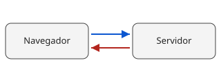

La petición
Una petición, una respuesta y un archivo.

La respuesta
El servidor devuelve el cuerpo junto a su tipo MIME.
Antes de publicar
Diez comprobaciones estructurales y una hoja de estilos válida.
Una petición, una respuesta y un archivo.

El servidor devuelve el cuerpo junto a su tipo MIME.
Diez comprobaciones estructurales y una hoja de estilos válida.